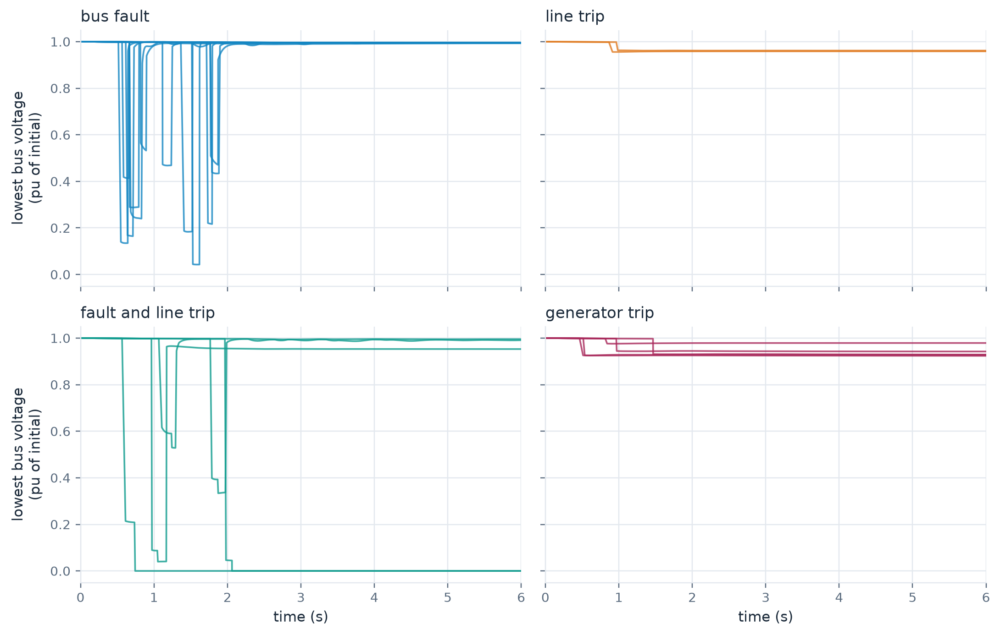

import json
import shutil
from pathlib import Path
import matplotlib.pyplot as plt
import numpy as np
import pandas as pd
import pypowsybl as pp
import yaml
import zarr
work = Path("outputs/part4")
shutil.rmtree(work, ignore_errors=True)
work.mkdir(parents=True)20 min Part 4 of 4 Dynawo · gridfm-datakit
In this part
- Write a distribution of disturbances in a few lines of configuration.
- Preview the drawn events on the grid graph before simulating anything.
- Generate trajectories under faults and trips, and read back what each sample went through.
Events as a distribution
Part 3 hit every operating point with the same fault. A model trained on that data learns one fault. dynamic.event_perturbation draws the events of every sample from scenarios you describe instead.
- A scenario is a sequence of one or more events, drawn with a relative
weight. - Each event has a
type, atargetand itsparams, plus an optionaldelayafter the scenario’sstart_time. - A target is either a fixed
static_id, or an element type at adistancein branch hops from an anchor bus, itself fixed or random. - Any number can be a value spec, a fixed value or a distribution.
| Value spec | Draw |
|---|---|
0.1 |
always 0.1 |
{distribution: uniform, low, high} |
uniform on [low, high) |
{distribution: normal, mean, std, min, max} |
normal, redrawn outside the bounds |
{distribution: choice, values, weights} |
one of the values |
| Event type | Targets | Parameters |
|---|---|---|
NodeFault |
bus | fault_time, r_pu, x_pu |
Disconnect |
bus, generator, load, line, transformer | none |
ActivePowerVariation |
generator, load | delta_p |
ReactivePowerVariation |
generator, load | delta_q |
ReferenceVoltageVariation |
generator | delta_u |
Four kinds of trouble
A bus fault cleared after a delay, a line trip, a bus fault with a line tripping next to it, and the loss of a generator. The plain bus fault is twice as likely as each of the others.
event_perturbation = yaml.safe_load("""
type: random
n_event_variants: 4 # event variants per operating point
scenarios:
- name: bus_fault
weight: 2
start_time: {distribution: uniform, low: 0.5, high: 2.0}
events:
- type: NodeFault
target: {element: bus, distance: 0}
params:
fault_time: {distribution: normal, mean: 0.1, std: 0.03, min: 0.05, max: 0.2}
r_pu: 0.0
x_pu: {distribution: uniform, low: 0.005, high: 0.05}
- name: line_trip
start_time: {distribution: uniform, low: 0.5, high: 2.0}
events:
- type: Disconnect
target: {element: line, distance: [0, 2]}
- name: fault_and_line_trip
start_time: {distribution: uniform, low: 0.5, high: 2.0}
events:
- type: NodeFault
target: {element: bus, distance: 0}
params:
fault_time: 0.2
r_pu: 0.0
x_pu: {distribution: uniform, low: 0.005, high: 0.05}
- type: Disconnect
target: {element: line, distance: 0}
delay: {distribution: uniform, low: 0.08, high: 0.15}
- name: generator_trip
start_time: {distribution: uniform, low: 0.5, high: 2.0}
events:
- type: Disconnect
target: {element: generator, distance: [0, 3]}
""")distance: 0 from a random anchor picks any bus. In fault_and_line_trip, the line at distance 0 touches the faulted bus. It trips 80 to 150 ms after the fault starts, and the fault still lasts its full 200 ms.
Preview the draws
The draw happens on the graph of the grid, so it can be inspected without running Dynawo. Datakit calls the same functions inside the pipeline, seeded per sample.
from gridfm_datakit.dynamic.event_perturbation import (
draw_events,
parse_event_perturbation,
)
from gridfm_datakit.dynamic.placement import EventGraph
network = pp.network.load("../data/ieee14/IEEE14.iidm")
graph = EventGraph.from_network(network)
spec = parse_event_perturbation(event_perturbation, start_time=0.0, stop_time=10.0)
rng = np.random.default_rng(7)
preview = pd.concat(
[draw_events(spec, graph, rng).assign(draw=i) for i in range(8)], ignore_index=True
)
preview.round(3).set_index(["draw", "scenario"])| event_name | static_id | start_time | params | ||
|---|---|---|---|---|---|
| draw | scenario | ||||
| 0 | fault_and_line_trip | NodeFault | _BUS____5_TN | 1.664 | fault_time=0.2;r_pu=0.0;x_pu=0.015134323549576636 |
| fault_and_line_trip | Disconnect | _BUS____4-BUS____5-1_AC | 1.765 | disconnect_only=; | |
| 1 | generator_trip | Disconnect | _GEN____2_SM | 1.732 | disconnect_only=; |
| 2 | fault_and_line_trip | NodeFault | _BUS___11_TN | 0.955 | fault_time=0.2;r_pu=0.0;x_pu=0.017529152544534802 |
| fault_and_line_trip | Disconnect | _BUS___10-BUS___11-1_AC | 1.052 | disconnect_only=; | |
| 3 | line_trip | Disconnect | _BUS____6-BUS___11-1_AC | 1.330 | disconnect_only=; |
| 4 | generator_trip | Disconnect | _GEN____6_SM | 1.433 | disconnect_only=; |
| 5 | generator_trip | Disconnect | _GEN____2_SM | 0.740 | disconnect_only=; |
| 6 | fault_and_line_trip | NodeFault | _BUS___11_TN | 0.554 | fault_time=0.2;r_pu=0.0;x_pu=0.028169996912211667 |
| fault_and_line_trip | Disconnect | _BUS___10-BUS___11-1_AC | 0.666 | disconnect_only=; | |
| 7 | generator_trip | Disconnect | _GEN____6_SM | 1.271 | disconnect_only=; |
Every row is an event Dynawo will simulate, with its time and its drawn parameters written out.
Generate
Six load scenarios, no topology change so that the events stand out, four event variants each. The configuration is the one from Part 3 with event_perturbation added, a shorter list of curves, and its own output folder.
variables = pd.DataFrame(
[("Curve", f"_BUS{'_' * (5 - len(str(i)))}{i}_TN", "U_value") for i in range(1, 15)]
+ [("Curve", "_GEN____1_SM", "generator_omegaPu_value")],
columns=["type", "model_id", "variables"],
)
variables.to_csv(work / "variables.csv", index=False)
config = yaml.safe_load("""
network:
name: IEEE14
source: file
reader: powsybl
file: ../data/ieee14/IEEE14.iidm
load:
generator: agg_load_profile
agg_profile: default
scenarios: 6
sigma: 0.2
change_reactive_power: true
global_range: 0.4
max_scaling_factor: 4.0
step_size: 0.05
start_scaling_factor: 0.8
topology_perturbation:
type: none
generation_perturbation:
type: none
admittance_perturbation:
type: none
dynamic:
dynamic_solver: dynawo
input_files:
static_element_dynamic_models_file: ../data/ieee14/static_element_dynamic_models.csv
automation_systems_file: ../data/ieee14/automation_systems.csv
variables_file: outputs/part4/variables.csv
solver_parameters:
start_time: 0.0
stop_time: 10.0
parameters_file: ../data/ieee14/IEEE14.par
network_parameters_file: ../data/ieee14/IEEE14.par
network_parameters_id: Network
solver_type: IDA
solver_parameters_file: ../data/ieee14/IEEE14.par
solver_parameters_id: IDAOrder2
logging:
verbosity: warning
settings:
mode: pf
pf_solver: powsybl
data_dir: outputs/part4/data
num_processes: 4
large_chunk_size: 6
overwrite: true
include_dc_res: false
enable_solver_logs: false
pf_fast: false
dcpf_fast: false
max_iter: 200
seed: 42
""")
config["dynamic"]["event_perturbation"] = event_perturbationfrom gridfm_datakit.dynamic.generate_dynamic import generate_dynamic_data
generate_dynamic_data(config)What each sample went through
events.parquet records every simulated event, keyed like the curves.
root = Path("outputs/part4/data/IEEE14/raw/dynamic")
KEYS = ["scenario_index", "perturbation_index", "event_index"]
events = pd.read_parquet(root / "events.parquet")
meta = json.loads((root / "metadata.json").read_text())
store = zarr.open(str(root / "dynamic_results.zarr"), mode="r")
bus = pd.read_parquet(root / "bus_data.parquet")
slice_of = {
tuple(int(v) for v in key): i
for i, key in enumerate(zip(*(np.asarray(store[k]) for k in KEYS), strict=True))
}
def curve(key, name):
"""Time and values of one variable for one sample, without the NaN padding."""
i = slice_of[key]
n = meta["timesteps_per_scenario"][i]
return store["time"][i, :n], store["curves"][
i, meta["variable_names"].index(name), :n
]
print(len(slice_of), "samples")
events.round(3).head(8)24 samples| scenario_index | perturbation_index | event_index | scenario | event_name | static_id | start_time | params | |
|---|---|---|---|---|---|---|---|---|
| 0 | 0 | 0 | 0 | fault_and_line_trip | NodeFault | _BUS____5_TN | 1.788 | fault_time=0.2;r_pu=0.0;x_pu=0.036381561307671374 |
| 1 | 0 | 0 | 0 | fault_and_line_trip | Disconnect | _BUS____2-BUS____5-1_AC | 1.874 | disconnect_only=; |
| 2 | 0 | 0 | 1 | generator_trip | Disconnect | _GEN____1_SM | 0.840 | disconnect_only=; |
| 3 | 0 | 0 | 2 | bus_fault | NodeFault | _BUS____8_TN | 1.734 | fault_time=0.06078018701957693;r_pu=0.0;x_pu=0... |
| 4 | 0 | 0 | 3 | generator_trip | Disconnect | _GEN____3_SM | 0.971 | disconnect_only=; |
| 5 | 1 | 0 | 0 | fault_and_line_trip | NodeFault | _BUS____2_TN | 1.107 | fault_time=0.2;r_pu=0.0;x_pu=0.033473983156034406 |
| 6 | 1 | 0 | 0 | fault_and_line_trip | Disconnect | _BUS____1-BUS____2-1_AC | 1.244 | disconnect_only=; |
| 7 | 1 | 0 | 1 | generator_trip | Disconnect | _GEN____6_SM | 1.467 | disconnect_only=; |
kind = events.drop_duplicates(KEYS).set_index(KEYS).scenario
kind.value_counts().rename("samples").to_frame()| samples | |
|---|---|
| scenario | |
| bus_fault | 12 |
| fault_and_line_trip | 5 |
| generator_trip | 5 |
| line_trip | 2 |
Responses by event type
One panel per scenario. The lowest bus voltage across the grid, relative to its value before the event, shows how deep each disturbance cut.
u_names = [name for name in meta["variable_names"] if name.endswith("U_value")]
names = [s["name"] for s in event_perturbation["scenarios"]]
fig, axes = plt.subplots(2, 2, figsize=(10, 6.4), sharex=True, sharey=True)
for ax, name, color in zip(axes.flat, names, PALETTE, strict=False):
for key in [k for k in slice_of if kind.get(k) == name]:
t = curve(key, u_names[0])[0]
u = np.array([curve(key, n)[1] for n in u_names])
ax.plot(t, (u / u[:, :1]).min(axis=0), color=color, linewidth=1.2, alpha=0.8)
ax.set(title=name.replace("_", " "), xlim=(0, 6))
for ax in axes[1]:
ax.set_xlabel("time (s)")
for ax in axes[:, 0]:
ax.set_ylabel("lowest bus voltage\n(pu of initial)")
fig.tight_layout()
Faults dip deep and recover. Trips leave a lasting change. A fault with a line trip does both. When the faulted bus hangs on a single line, the trip leaves it dead, which is the flat line at zero.
Initial state, event, trajectory
Every sample now holds three aligned pieces: the Parquet initial state, the event record and the Zarr trajectory. Add the topology_perturbation of Part 3 and all three keys vary at once.
key = list(slice_of)[5]
print("sample", dict(zip(KEYS, key, strict=True)))
print("initial demand", round(bus.set_index(KEYS).loc[key].Pd.sum(), 1), "MW")
events.set_index(KEYS).loc[
[key], ["scenario", "event_name", "static_id", "start_time", "params"]
]sample {'scenario_index': 1, 'perturbation_index': 0, 'event_index': 1}
initial demand 428.7 MW| scenario | event_name | static_id | start_time | params | |||
|---|---|---|---|---|---|---|---|
| scenario_index | perturbation_index | event_index | |||||
| 1 | 0 | 1 | generator_trip | Disconnect | _GEN____6_SM | 1.467255 | disconnect_only=; |
Your turn
TipExercise · A fixed hot spot
Add a fifth scenario, voltage_step, that changes the voltage set-point of generator 1 (static_id: _GEN____1_SM) by a value drawn uniformly between -0.05 and 0.05 pu. Preview twenty draws with the new spec and count how often each scenario comes up.
NoteShow a solution
voltage_step = yaml.safe_load("""
name: voltage_step
start_time: {distribution: uniform, low: 0.5, high: 2.0}
events:
- type: ReferenceVoltageVariation
target: {static_id: _GEN____1_SM}
params:
delta_u: {distribution: uniform, low: -0.05, high: 0.05}
""")
extended = {
**event_perturbation,
"scenarios": event_perturbation["scenarios"] + [voltage_step],
}
spec = parse_event_perturbation(extended, start_time=0.0, stop_time=10.0)
rng = np.random.default_rng(0)
draws = [draw_events(spec, graph, rng) for _ in range(20)]
pd.Series([d.scenario.iloc[0] for d in draws]).value_counts()fault_and_line_trip 6
line_trip 6
voltage_step 3
bus_fault 3
generator_trip 2
Name: count, dtype: int64
NoteWhere to go next
The dynamic simulation manual of GridFM-Datakit documents every key, the output layout and the known limits. Back to the overview.